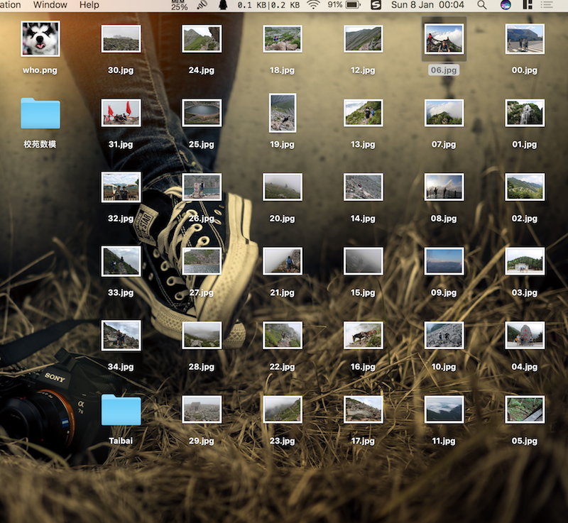

TravelNote-fst
TaiBai Spectacle
是时候来一篇游记 （=￣ω￣=）o
”会当凌绝顶，一览众山小“ 啊哈，小小嘚瑟一下自己不忍直视的古诗文水平。自古以来，五岳都被人们津津乐道，都是古来圣贤向往之地。虽然五岳只爬过华山（也有四五次了吧），但我还是想说，太白之景一定丝毫不逊色于五岳（原谅我这么武断，太白的美景给我留下的印象太深刻了）。那么，就带给大家一篇太白游记！亦可以当成攻略啦。
前方流量预警，非Wifi用户注意咯。（￣︶￣）↗
为了减小大家的流量压力，特意熬夜压缩图片(有图有真相)，不要太谢博主。

切入正题 Let’s goooo
话说太白山，太白太白。噢，先得说下太白山的位置不是，大致定位了下（陕西太白、眉县、周至三县交界处）
太白山，秦岭山脉最高峰，也是青藏高原以东第一高峰。太白山是渭河水系和汉江水系分水岭最高地段，具低山、中山、高山等地貌类型，界限清楚、特点各异，特别是第四纪冰川活动所雕琢的各种地貌形态保留完整、清晰可辨。太白山与鳌山东西相对，现在我们说的太白山，指的是西太白，而东太白就是与其相对的鳌山。
太白太白，太白山到底和李白有关系吗？我也不知道，自己来看呗。
不啰嗦了，出发
嗖 ╰(￣▽￣)╭
神奇的游客服务中心。你懂得。票价120元/人，我们当时用的学生证，半价！
谈钱多伤感情啊，买票等繁杂的手续略过！
温馨提示：高海拔，高海拔，高海拔。 重要的事说三遍，有高原反应或者其他疾病的亲们还是看看我的图片就好 (～￣▽￣)～
上车（其实我并不是一个喜欢被人拍的骚年）
首先会被旅游车从山下拉到海拔2000多米的位置，大概1个小时车程，不得不佩服司机师傅的开车技术，老司机，没得说。当然，沿途也有不少景点可以观看。每个景点都会停，如果乘客想看或者拍照的话。这些景点里最漂亮的94这个
莲花瀑布
绕来绕去，绕啊绕啊，到达登山口
这种路，对于科三还没过的马路杀手来说，简直是噩梦 (⊙ˍ⊙)
哈哈哈，准备好吃的喝的，准备登山！（希望大家都准备一个垃圾袋，你懂得，我们是高素质的四有青年）。
看到左边这个帅哥腰上的黄色大袄了么，山上冷，怕冷的亲们可以选择租一个，这里就可以租。当然山上也有住的地方，自己选择哈，山上住宿情况还好啦，共有两处，一处在文公庙（天圆地方再往前走1公里左右），另一处在大爷海附近，都是通铺。
登山 Go
咦，松鼠，竟然怕我，我有这么可怕吗ヽ(｀⌒´)ﾉ
大概在海拔2500米左右，看 ——小云海（请忽略这个抢镜滴）
爬呀爬，一路上各种美。鉴于流量原因，就随便放两张咯
上面这个大云海，真的是美的不要不要的。
为什么我更喜欢爬太白山呢，因为其险峻绝不亚于华山。
眺望远方，犹如水墨画一般
终于到达天圆地方 ︿(￣︶￣)︿
这里是海拔3300米左右的位置。我们是下午3点开始爬的，大概5点半左右到这里，如果大家要爬的话，4个小时左右没问题（毕竟我们是年轻小伙嘛）。还有一种选择就是做索道到这里。因为天气原因，要下雨咯，我们决定往前走一公里，先在文公庙住下，养精蓄锐。
好吧，今天就到这咯。1点了已经，第二天的种种明天再说。